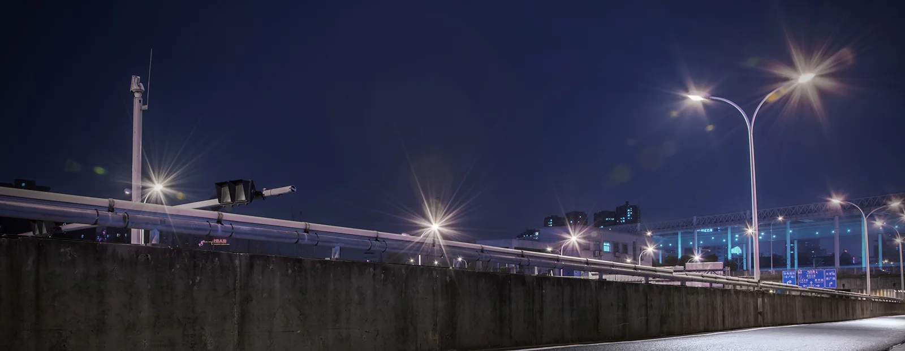
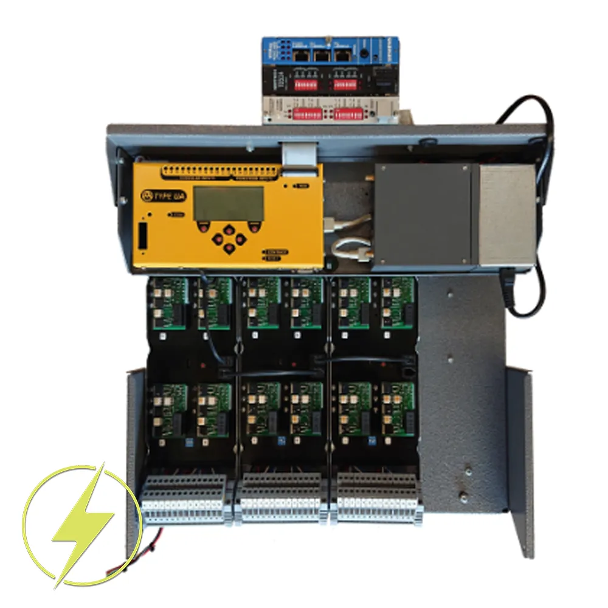
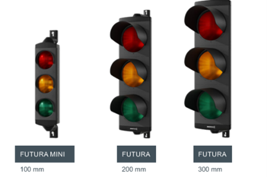
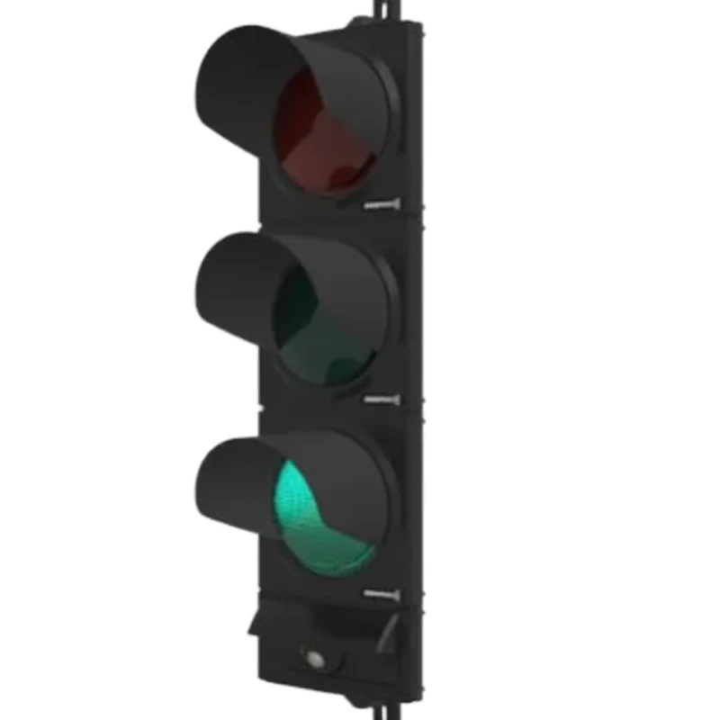
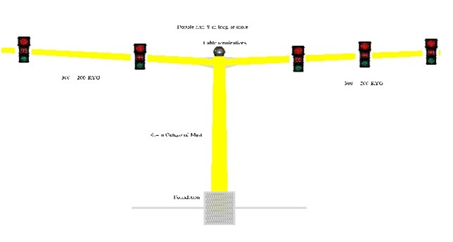
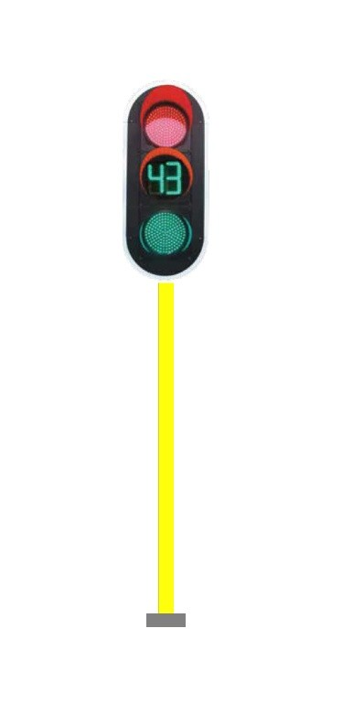

Global Suntech / Smart Signals. Everyday.
LED LIGHT SOLUTIONS
Modern LED signal with more than 15 year lifespan. They suitable for cities, tollgate, and similar applications.

SERIES TYPE STREETLIGHTS
SP / SY / SH SERIES DESIGN TY


Product List
| Series | Models |
|---|---|
| SY Series | SY-80, SY-100 |
| SH Series | SH-100-M, SH-120-M |
| SP Series | SP-150, SP-200-A, SP-200 |
Key Features
- Separate solar panel and lamp assembly.
- Monocrystalline silicon solar cells.
- Long-life LiFePO4 battery.
- Patented bat-wing lens.
- IPC 5.0 intelligent power control.
- Weather-responsive discharge management.
- Battery, charging and load indicators.
- Software and hardware battery protection.
- Remote-control lighting modes.
Installation
| Mounting Height | 5–10 m, depending on model |
|---|---|
| Pole-Top Diameter | 60 mm |
| Installation Spacing | 20–40 m |
Lighting Performance
| LED Power Range | 20–70 W |
|---|---|
| Luminous Flux | 3,400–12,000 lm |
| System Efficacy | Up to 160 lm/W |
| Colour Temperature | 6000–7500 K |
| Colour Rendering | Ra ≥ 70 |
| Beam Options | 150° × 70° / 155° × 55° / 160° × 45° |
| LED Lifespan | 50,000 hours |
| Protection Rating | IP65 |
| Operating Temperature | −20 °C to +60 °C |
Solar Panel & Battery
| Panel Type | Monocrystalline silicon |
|---|---|
| Panel Power Range | 60–200 W |
| Panel Voltage | 6 V / 18 V |
| Solar Cell Efficiency | 17–20% |
| Battery Type | LiFePO4 |
| Battery Energy | 192–640 Wh |
| Battery Cycle Life | More than 2,000 cycles |
| Rainy-Day Operation | 5–7 days, brochure claim |
System Design
The all-in-two configuration separates the solar panel from the lighting assembly, simplifying transport, installation and maintenance.
AIO TYPE STREETLIGHTS
INTEGRATED SOLAR LIGHTING

Key Features
- Integrated solar lighting assembly with a high-efficiency panel.
- Grade A LiFePO4 battery.
- Multi-peak MPPT charging technology.
- IPC 5.0 intelligent power management.
- Modular battery and LED components.
- Anti-corrosion aluminum housing.
- Battery capacity indicators.
- Remote-selectable lighting modes.
Solar & Battery System
| Panel Type | Monocrystalline silicon |
|---|---|
| Solar Cell Efficiency | 22–24% |
| Panel Power Range | 42–150 W |
| Battery Chemistry | Grade A LiFePO4 |
| Battery Energy Range | 144–960 Wh |
| Battery Capacity Range | 45–300 Ah |
| Installation Spacing | 20–40 m |
Operating Modes
| DEMO | Light on for one minute for testing |
|---|---|
| OFF | Light off, day or night |
| L Mode | 100% for 2 h; 70% for 2 h; 30% until dawn |
| T Mode | 100% for 3 h; 50% for 2 h; 20% for 6 h; 50% for 1 h before dawn |
| M Mode | Whole-night operation at reduced output power |
| U Mode | Highlight mode; timed output boost |
| Default Mode | T mode |
Lighting & Protection
| System Efficacy | Greater than 160 lm/W |
|---|---|
| Colour Temperature | 3000–7500 K |
| Colour Rendering | Ra ≥ 70 |
| LED Lifespan | 50,000 hours |
| Protection Rating | IP65 |
| Operating Temperature | −20 °C to +60 °C |
| Charging Temperature | Above 0 °C |
Series Type Product List
| Model | Solar Panel | Luminous Flux | Battery | Mounting Height |
|---|---|---|---|---|
| AIO-40 | 42 W | 4,000 lm | 144 Wh / 45 Ah | 4–6 m |
| AIO-60 | 60 W | 6,000 lm | 240 Wh / 75 Ah | 6–7 m |
| AIO-80 | 90 W | 10,000 lm | 384 Wh / 120 Ah | 6–8 m |
| AIO-120 | 120 W | 15,000 lm | 640 Wh / 200 Ah | 8–10 m |
| AIO-150 | 150 W | 18,000 lm | 960 Wh / 300 Ah | 10–12 m |
F3 LED FLOODLIGHTS
AC-POWERED AREA LIGHTING — MODEL ST-F3-400W


Key Features
- Universal 100–277 V AC input.
- Die-cast ADC12 aluminium housing.
- IP66 dust and water protection.
- Multiple narrow and wide beam options.
- High-power-factor LED driver.
- 20 kV surge protection stated in key features.
- Optional dimming and sensor controls.
- Suitable for outdoor wet locations.
Applications
- Roads and large outdoor areas.
- Billboards and building illumination.
- Tunnels, bridges and culverts.
- Public squares and general area lighting.
Optional Controls
| Dimming | 0–10 V / PWM / DALI |
|---|---|
| Sensors | Photocell / microwave motion sensor |
| NEMA Receptacle | Optional 3-pin, 5-pin or 7-pin |
| LED Brands | San'an standard; Osram, Philips and others optional |
Electrical & Construction
| Model | ST-F3-480W |
|---|---|
| Input Voltage | 100–277 V AC |
| Frequency | 50 / 60 Hz |
| Power Supply Efficiency | Greater than 92% |
| Power Factor | ≥ 0.95 |
| THD | ≤ 10% at 220–240 V AC |
| Protection Rating | IP66 |
| Housing Material | Die-cast ADC12 aluminium |
| Net Weight | 15 kg; 17 kg with hood cover |
| Operating Temperature | −40 °C to +60 °C |
| Humidity Range | 10–90% RH |
Lighting Performance
| Efficacy Options | 110–160 lm/W |
|---|---|
| Listed Luminous Flux | 55,000–80,000 lm, ±5% |
| Colour Temperature | 2700–5700 K, adjustable as listed |
| Colour Rendering | Ra > 70 |
| LED Package Options | 3535 / 3030 / 5050 |
| Beam Options | 7°, 15°, 30°, 60°, 90°, 120° |
| Road Optics | T2M / T3M / T4M, configuration-dependent |
| Listed Lifetime | More than 50,000 hours |
Optical Configurations
| Efficacy | Luminous Flux | LED Package | Lens Type |
|---|---|---|---|
| 110 lm/W | 55,000 lm ±5% | 3535 | 4-in-one |
| 120 lm/W | 60,000 lm ±5% | 3030 | 12-in-one |
| 140 lm/W | 70,000 lm ±5% | 3030 | 16-in-one |
| 150 lm/W | 75,000 lm ±5% | 5050 | 4-in-one |
| 160 lm/W | 80,000 lm ±5% | 3030 | 24-in-one |
GLOBAL SUNTECH / SMART SIGNALS. EVERYDAY.
TRAFFIC SOLUTIONS
Modern LED signal with more than 15 year lifespan. They suitable for cities, tollgate, and similar applications.
ITC-3 Signal Controller
Adaptive intersection control and connected traffic management
Global Suntech supplies this product in partnership with SWARCO Technology, Denmark. The ITC-3 combines a Linux-based ARM platform, dual safety CPUs and adaptive traffic algorithms for intersection control and coordinated traffic management.



Adaptive Traffic Management
- Adaptive signal control: Calculates flow-to-capacity each cycle to optimise cycle time and green splits.
- Corridor coordination: Coordinates signal offsets and green splits across multiple intersections.
- Control strategies: Adaptive operation, traffic-actuated control and time-based plan selection, subject to the configured software.
- SWARCO OMNIA: Proposed central management connectivity, subject to confirmed interfaces, licences and configuration.
- Remote supervision: SWARCO Cloud and web-interface access, according to the supplied configuration.
- External systems: SCATS and SCOOT/UTMC connectivity requires the appropriate interfaces.
- Traffic Light Assistant: Time to Green and Time to Red functionality, subject to configuration.
Core Hardware
- Linux main processor with onboard RTC.
- Shielded 30 W power supply: +5 V DC and +12 V DC.
- TIC-800 eight-loop, auto-tuning detector card.
- Maximum loop feeder length: 300 m.
- Nine fused outputs per signal-group card.
Key Features
- ARM-based Linux system.
- Dual safety CPUs for redundant logic.
- SIL 3 to IEC 61508 listed in the earlier source image; certification scope requires confirmation.
- Adaptive traffic algorithms.
- Integrated 800 × 480 touchscreen.
Hardware & Capacity
| System voltage | 80–260 V AC |
|---|---|
| Standard signal groups | 6, 12 or 24 |
| Maximum signal groups | 64 |
| Loop detector inputs | 128 |
| Digital I/O | 128 |
| Minimum control resolution | 100 ms window |
| Safety reaction | 20–200 ms |
Cabinet & Software
| Construction | Seawater-resistant aluminium |
|---|---|
| Dimensions | H 1300 × W 900 × D 420 mm |
| Total weight | 80 kg |
| Finish | Customisable RAL colour |
| Protocols | STCIP, STREAMS, NTCIP |
| Listed standards | EN 50556, EN 12675 |
| Operating lifetime | 10 years minimum, as previously listed |
GUI, AI Options & Reporting
The Global Suntech catalogue identifies integrated GUI, AI-powered adaptive control and reporting as traffic management system capabilities.
- Integrated GUI: Central presentation of incidents, devices and dashboards, with CCTV and VMS integration where supported.
- AI-powered option: External AI analytics may complement adaptive control. Native ITC-3 machine learning is not confirmed.
- Reporting: Operational review using available platform data; metrics and report formats depend on the selected system.
E100 Signal Controller
Centralised coordination and flexible intersection control
The E100 is a centralised traffic controller equipped with an ARM main control chip and an embedded Linux operating system. Its modular hardware and multiple signal control modes support configurable intersection operation and maintenance.
Control & Coordination
- Centralised coordinated control through a command centre.
- Multi-period fixed-time control.
- Self-adaptive arterial and area coordination.
- Off-line arterial and area coordination.
- Wireless coordination through an optional GPS module.
- Single-point self-adaptive control.
- Actuated and semi-actuated control.
- Manual phase stepping.
- Pedestrian crossing trigger control.
Monitoring, Safety & Options
Monitoring and protection
- Traffic data acquisition and analysis.
- Malfunction detection and alarms.
- Yellow flashing and all-red modes.
- Over-voltage protection.
- Door-opening alarm.
Priority and operator options
- BRT control: optional.
- VIP vehicle priority control.
- Mobile terminal operation: optional phone or tablet.
- GPS module: optional for wireless coordination.
Technical Parameters
| Signal outputs | 56-way; expandable to 112-way |
|---|---|
| Input detection interface | 28 vehicle inputs; 8 pedestrian-request inputs |
| Detection input connection | Dry contact or OC transistor output; RJ45 connection listed |
| Presettable time-based schedules | 40 |
| Presettable stage tables | 16 |
| Presettable period tables | 16 |
| Maximum stages per stage table | 16 |
| Maximum periods per period table | 48 |
| Presettable phases | 24 |
| Presettable plans | 32 |
Communication & Interfaces
| EIA-level RS232 | 3 ports; 1200–115200 bps |
|---|---|
| RS485 | 1 interface for countdown timer communication |
| Network | 1 port; 10/100M adaptive |
| USB | 1 USB 2.0 interface |
| GPS | 1 interface with GPS time service |
| Pedestrian-request interface | 2 dry-contact signals, optional |
| Flashing yellow controller interface | 1 interface; optocoupler output linked to an OC transistor output |
SW200 Signal Controller
48-output intelligent networking controller
The SW200 is an intelligent networking road traffic signal controller with a 32-bit ARM microcontroller, 6U modular control and driving boards, and a 19-inch standard rack-mounted enclosure. The supplied product sheet lists NTCIP communication, remote network control and multiple control strategies.
MODULAR NETWORKED CONTROL
Designed for configurable signal operation, remote status monitoring and accessible maintenance of control and driving modules.
Main Features
- ARM processing: Computing and communication using a 32-bit ARM platform.
- Signal switching: SCR-based traffic signal outputs.
- Local indication: Built-in LED lamp and ampere/voltage meter.
- Remote diagnostics: Fault detection, alarm reporting, signal and communication status monitoring.
- Self-degraded operation: Degraded running capability is listed in the supplied product sheet.
- Modular maintenance: Modular control and driving boards simplify assembly and servicing.
Control Modes
Fixed-time control
Preset timing operation
Actuated operation
Demand-responsive operation
Pedestrian-request operation
Pedestrian demand input
Manual control
Local manual intervention
Green-wave coordination
Coordinated signal progression
Remote network control
Control through supported interfaces
Technical Specifications
| Processor | 32-bit ARM microcontroller |
|---|---|
| Mechanical format | 6U modular boards; 19-inch rack-mounted enclosure |
| Working voltage | AC 85–264 V, 50/60 Hz |
| Power consumption | Less than 30 W |
| Signal outputs | 48 outputs / 16 groups |
| Presettable stage plans | 16 |
| Presettable time-based schedules | 16 |
| Ingress protection | IP54 |
| Working temperature | −40 °C to +70 °C |
| Working humidity | Less than 95%; no condensation |
| Vehicle detector interface | 24 I/O signal inputs |
| GPS | GPS accurate timing |
| Communication protocol | NTCIP, as stated in the supplied sheet |
| Interfaces | 1 network port; 1 RS485; 2 RS232; 1 USB; pedestrian-request and additional I/O |
Futura / Ciway
200 & 300 mm LED SIGNAL HEADS
Smart Signals | Everyday! / ITS products for tomorrow today.
The Ciway/Futura combines a slim, UV-stabilised polycarbonate housing with FUTURLED optics and flexible installation options. It comes on 200mm and 300mm signal heads.


Key Technical Specifications
| Specification | 200 mm | 300 mm |
|---|---|---|
| Optical diameter | 210 mm | 300 mm |
| LED colours | Red, amber, green | Red, amber, green |
| Luminous intensity* | > 200 cd | > 400 cd |
| Operating voltage | 230 V AC bright / 160 V AC dimmed | 230 V AC bright / 160 V AC dimmed |
| Listed power per module** | 12 W bright / 4 W dimmed | 12 W bright / 4 W dimmed |
| Dimmed light output | Approximately 50% | Approximately 50% |
| Module temperature range | -40 °C to +60 °C | -40 °C to +60 °C |
| Ingress protection | FUTURA head: IP55; module: IP65 | FUTURA head: IP55; module: IP65 |
| Phantom signal* | Class 5 with tinted lens | Class 5 with tinted lens |
FUTURA Housing Features
- UV-stabilised polycarbonate housing.
- 1, 2 or 3 aspects as standard.
- Vertical or horizontal installation.
- Impact resistance: class IR3.
- EN 12368; CE certification.
Mounting & Finishes
- Mounting: Two-point or cantilever brackets; bracket-mounted backing boards.
- Brackets: 168 mm polycarbonate; 105, 183 or 240 mm aluminium.
- Colours: Pebble-grey, fir-green, black, orange and silver-grey.
FUTURA Signal-Head Dimensions
Layout View
Exploded View

Configuration Dimensions
| Configuration | 210 mm: W × H × D | 300 mm: W × H × D |
|---|---|---|
| 1 aspect | 260 × 316 × 105 mm | 350 × 406 × 140 mm |
| 2 aspects | 260 × 576 × 105 mm | 350 × 756 × 140 mm |
| 3 aspects | 260 × 836 × 105 mm | 350 × 1106 × 140 mm |
CY 322K-HF
300/200 Combination Signal
Smart Signals | Everyday! / ITS products for tomorrow today.
Mixed-size traffic signal configuration with the 300 mm aspect at the top and 200 mm lower aspects. The drawing covers 2K and 3K configurations and several polycarbonate and aluminum mounting brackets.


Product Overview
| Product family | Combia Ciway KOMBI |
|---|---|
| Arrangement | 300 mm upper aspect; 200 mm lower aspect(s) |
| Configurations | 2K / 3K |
| Article number | 1058-Z0800M1 |
| Drawing reference | TC:1058-Z0800-M1-01 |
| Drawing revision | a01, 29 April 2026 |
Mounting Options
| Bracket | Material | Drawing designation |
|---|---|---|
| PC 70 | Polycarbonate | 70 mm |
| PC 175 | Polycarbonate | 175 mm |
| ALU 105 | Aluminium | 105 mm |
| ALU 183 | Aluminium | 183 mm |
| ALU 240 | Aluminium | 240 mm |
Dimensions & Installation Drawing

Depth reference
| Depth reference | 300 mm section | 200 mm section |
|---|---|---|
| Housing | 204 mm | 150 mm |
| Housing + front | 213 mm | 155 mm |
| Including visor | 290 mm | 194 mm |
Dimension "X"
| Dimension "X" | 2K | 3K |
|---|---|---|
| PC 70 | 767 ± 12 mm | 1047 ± 11 mm |
| PC 175 | 783 ± 5 mm | 1063 ± 5 mm |
| ALU 105 / 183 / 240 | 774 ± 15 mm | 1054 ± 15 mm |
CL-LED Lights
200 mm & 300 mm TRAFFIC SIGNALS
Smart Signals | Everyday! / ITS products for tomorrow today.
Clear-lens traffic signaling with polycarbonate optics, high-intensity LEDs and modular construction. Standalone 200 mm and 300 mm variants are standard designs. Some come with inbuilt countdown timers.
Key Specifications
| Specification | ST320T-JD-A3B reference data | |
|---|---|---|
| Standard supply | 85–265 V AC, 50/60 Hz | |
| Optional supply | 12–24 V DC or 42 V AC | |
| Light source | 5 mm EPISTAR DIP LEDs | |
| Lens / housing / visor | Polycarbonate; UV-resistant housing and visor | |
| Ingress protection | IP55 to IEC 60529 | |
| Impact resistance | IK08 to IEC 62262; IR3 also stated | |
| Operating temperature | −40 °C to +80 °C | |
| Declared LED life | More than 80,000 operating hours | |
| Compliance stated | EN 12368; CE and RoHS | |
| Warranty | 3 years | |
Key Features
- Transparent, impact-resistant lens.
- Anti-phantom optical design.
- Modular construction for maintenance.
- Stainless-steel wing-nut access.
- Neoprene door-edge sealing.
Installation Options
- Aluminium arm brackets.
- Galvanised steel L-brackets.
- Optional aluminium backing board.
- Black housing and visor as standard.
- Other colours subject to quantity.
200 mm & 300 mm Dimension Drawings
200 mm Signal
300 mm Signal
Configuration Matrix
| Dimension | 200 mm | 300 mm |
|---|---|---|
| Nominal optical size | 200 mm | 300 mm |
| Complete-head W × H × D | Supplier confirmation required | Supplier confirmation required |
| Mounting centres | Supplier confirmation required | Supplier confirmation required |
COUNTDOWN TIMER
3 Color RYG
Smart Signals | Everyday! / ITS products for tomorrow today.
Product Description
High-efficiency RYG signal head featuring a 300 mm display with an inbuilt three-color countdown timer. It is designed to meet high standards of efficiency and durability.
Technical Specifications
| Specification | Details |
|---|---|
| Material | UV-stabilized polycarbonate to withstand mechanical stress and adverse weather |
| Dimension | 300 mm |
| Available colours | Red / Yellow / Green |
PEDESTRIAN PUSH BUTTONS
SMART PEDESTRIAN
Smart Signals | Everyday! / ITS products for tomorrow today.
Product Description
Smart Pedestrian uses smart technology at physical pedestrian crossings to improve the way people cross. This technology is used in towns, cities, and schools. Global Suntech leads the implementation of this technology.


Technical Specifications
| Specification | Details |
|---|---|
| Material | UV-stabilized polycarbonate |
| Dimensions | 100, 200, 300 mm; and combinations |
| LED colours | Red / Green |
TRAFFIC POLES
OVERHEAD & STANDARD SUPPORT POLES
Smart Signals | Everyday! / ITS products for tomorrow today.
Overhead Poles
Standard tubular and octagonal poles. The design is performed using computer software to analyse the pole shaft, cantilever arm, and base plates. All poles receive a final yellow finish at site.

Overhead Pole Specifications
| Specification | Details |
|---|---|
| Available colours | Silver / Yellow |
Standard Pole with Frame
Standard tubular poles of 110 mm diameter, with heights from 3.3 m to 4 m. The poles are hot-dip galvanized.

| Specification | Details |
|---|---|
| Material | Mild steel |
| Dimensions | 110 mm diameter, 3.3 m height |
| Available colours | Yellow / Silver |